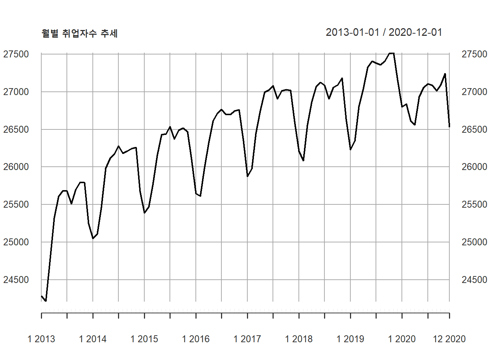
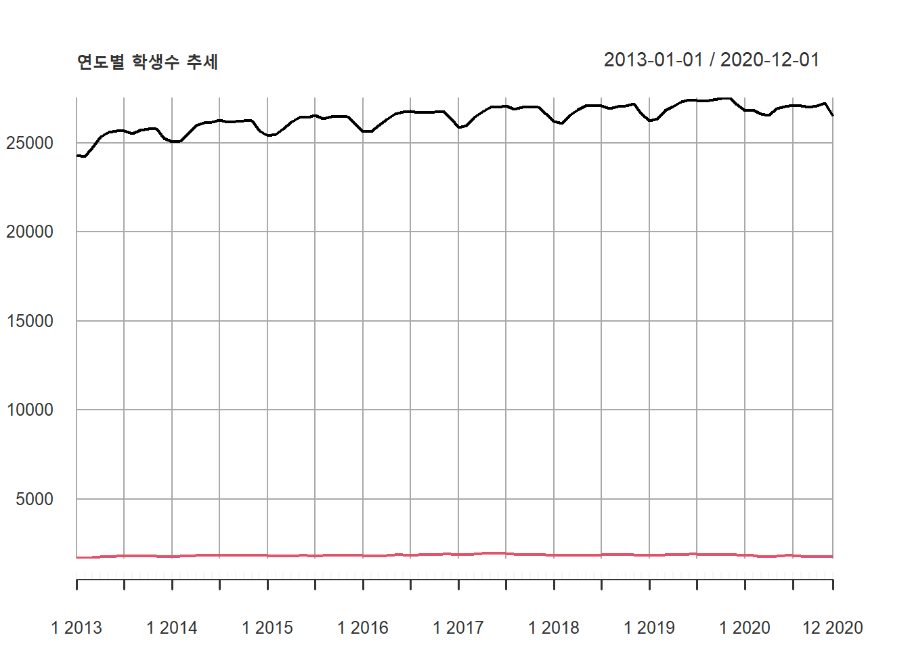
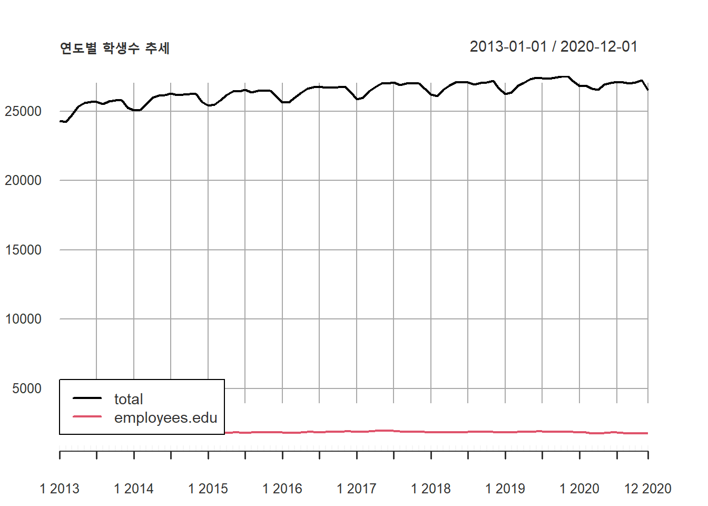
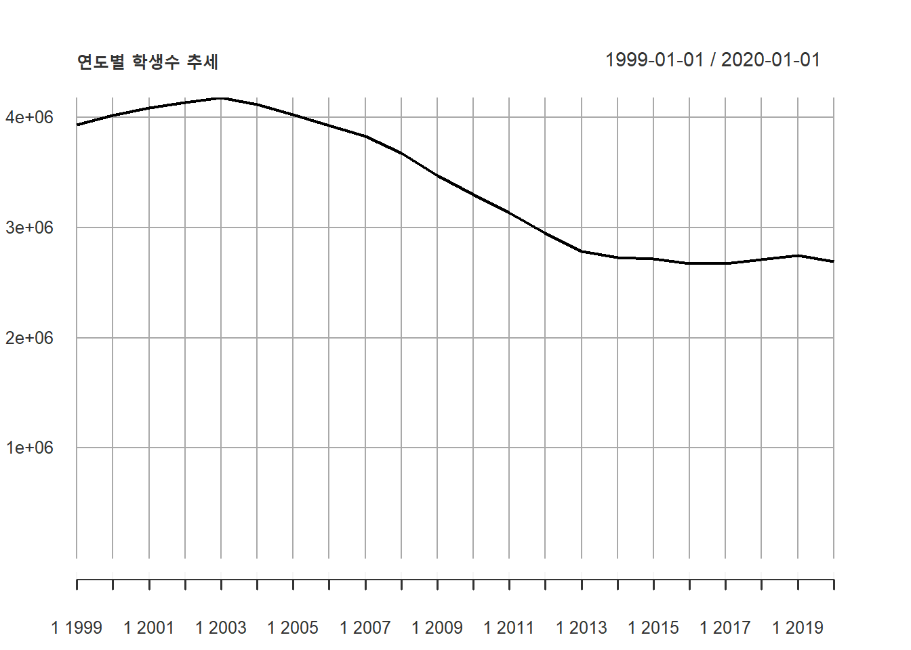
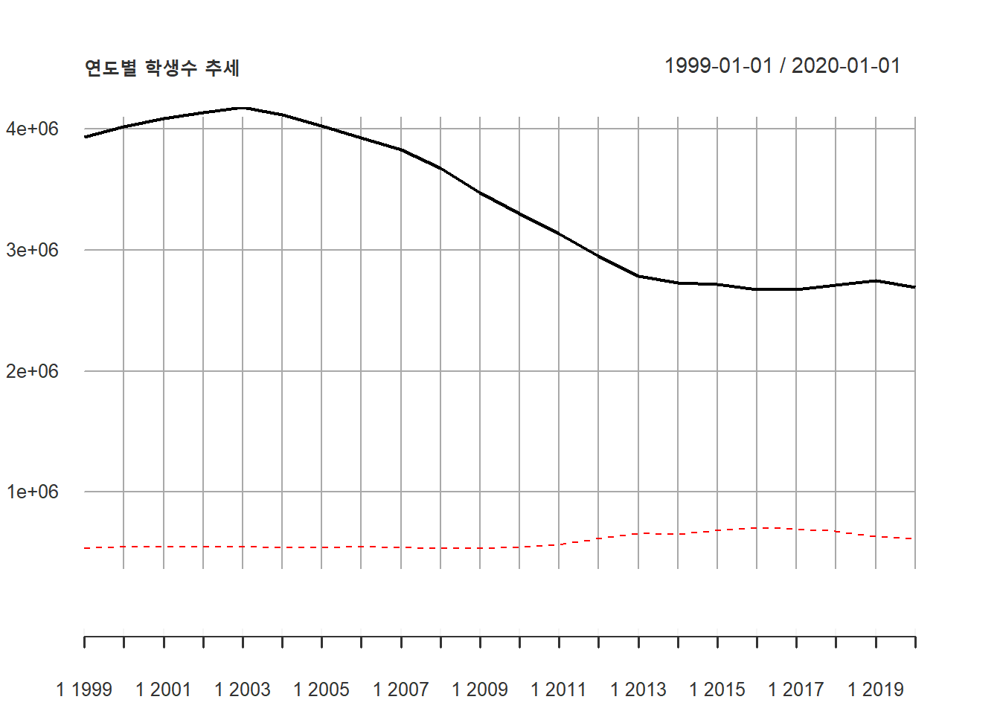
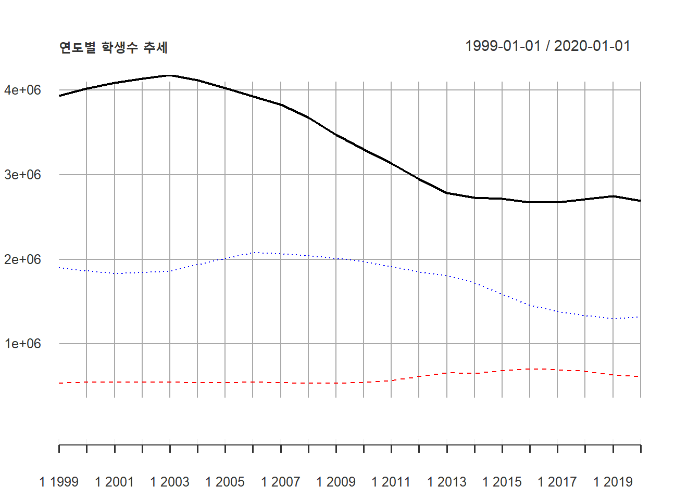
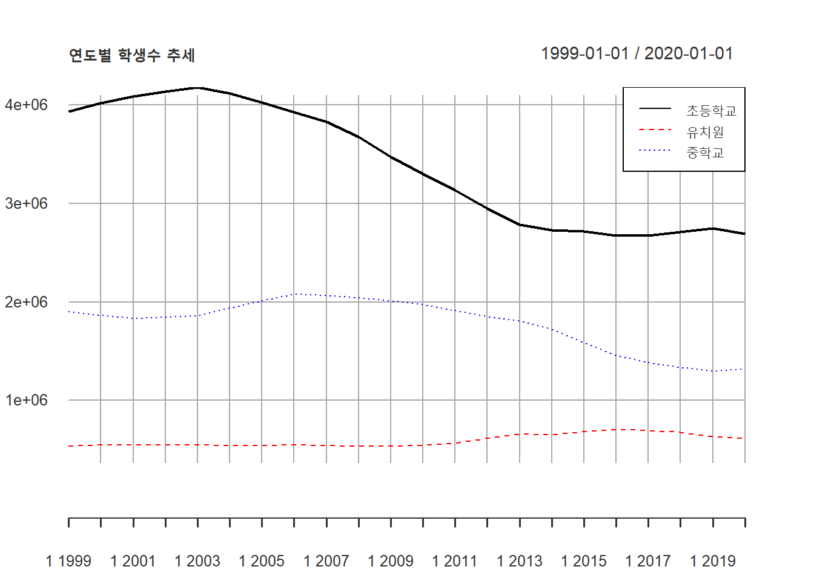
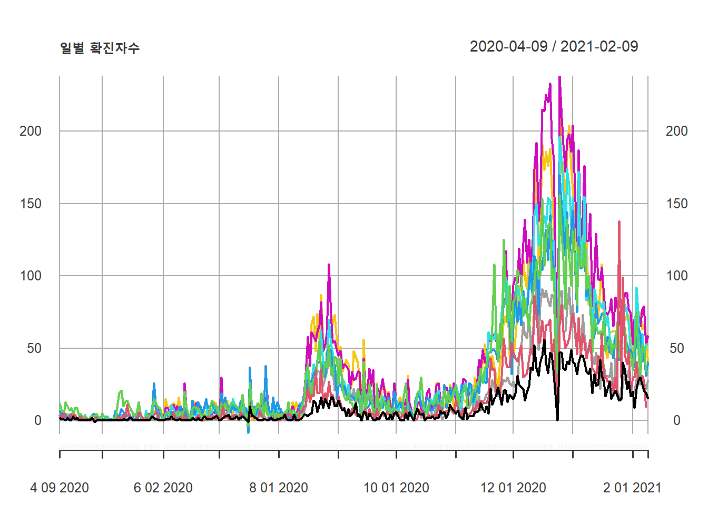
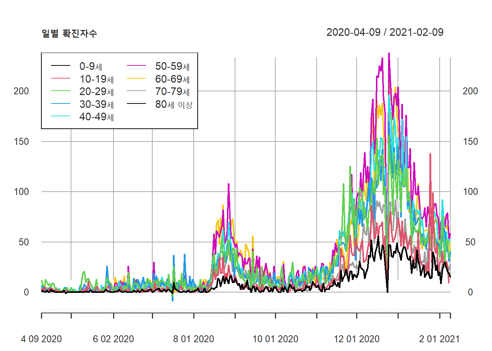

3.2 xts : xts 패키지
xts는 시계열 데이터를 다루는 데이터 클래스로 xts 패키지를 로딩해야 사용할 수 있다. xts 패키지에서는 데이터 핸들링 함수, 데이터 ploting 함수 등을 제공한다. 따라서 xts 패키지에서 제공하는 함수는 xts class의 데이터 객체를 대상으로 작동한다.
xts 패키지를 사용하여 plot을 작성하려면 plot.xts()함수를 사용한다. plot.xts()을 활용해 작성한 plot에 추가적으로 line, legend 등을 추가할 수 있다.
xts 패키지의 plot.xts()를 활용하는 것은 디자인적 측면에서 ggplot보다 못미치지만 시계열 데이터의 흐름을 빠르고 쉽게 파악하는 사용이 간편한 plot 함수를 제공한다는 점에서 큰 장점이 있다.
library(xts)
plot.xts(employees.xts$total, main = '월별 취업자수 추세', xlab = '월, 년', ylab = '취업자수')
위에서 본 것과 같이 xts 클래스 데이터의 단변량 plot은 plot.xts()로 간단히 그릴수 있다. 그렇다면 다변량 plot은 어떻게 그릴 수 있을까? 같은 xts 클래스 데이터에 여러 컬럼으로 저장된 다변량 plot은 단지 plot.xts()에 xts 객체를 전달할 때 그리고자 하는 컬럼을 전달해주면 같이 그려진다.
plot.xts(employees.xts, main = '연도별 학생수 추세', xlab = '년', ylab = '학생수', yaxis.right=FALSE)
addLegend('bottomleft', ncol = 1, bg = 'white', lty=c(rep(1, 12)), lwd=c(rep(2, 12)), bty="o")
코드 설명
plot.xts()에 두개의 시계열 데이터가 저장된 employees.xts를 전달함으로써 다변량 plot을 그림. 좌우 Y축에 모두 값이 표기되므로 우측 Y축에는 값을 제거
만약 같이 그리고자 하는 다변량 데이터가 다른 데이터 프레임에 있거나 컬럼을 같이 전달하기가 어려울 경우에는 다음과 같이 lines()를 사용하여 겹쳐서 그릴 수 있다.
plot.xts(students.xts$초등학교, main = '연도별 학생수 추세', xlab = '년', ylab = '학생수', yaxis.right=FALSE, ylim = c(0, max(students.xts$초등학교)), col = 'black')
lines(students.xts$유치원, lty = 2, col = 'red')
lines(students.xts$중학교, lty = 3, col = 'blue')
addLegend('topright', ncol = 1, , legend.names = c('초등학교', '유치원', '중학교'), col = c('black', 'red', 'blue'), lty=c(1, 2, 3), bg = 'white', bty="o")
코드 설명
plot.xts()를 사용하여 students.xts$초등학교 plot을 그림. plot 제목, 축 제목들을 적절히 설정. Y 축 값의 범위를 0부터 students.xts$초등학교의 최대값까지를 설정하였는데 범위가 적절히 설정되지 않으면 뒤에 그려지는 라인들이 범위를 벗어나서 보이지 않을 수 있음.lines()를 사용하여 students.xts$유치원 라인 plot을 생성, 라인타입(lty = 2)과 색(col = 'red')을 설정lines()를 사용하여 students.xts$중학교 라인 plot을 생성, 라인타입(lty = 3)과 색(col = 'blue')을 설정addLegend()를 사용하여 범례를 생성. 범례의 행은 1개, 범례에 사용하는 item 이름(legend.names = c('초등학교', '유치원', '중학교')), 색(col = c('black', 'red', 'blue')), 라인타입(lty=c(1, 2, 3))을 설정, 배경색은 흰색(bg = 'white'), 범례 배경타입은 불투명(bty="o")으로 설정
plot.xts()를 사용하여 코로나 확진자에 대한 plot은 다음과 같이 그릴 수 있다.
plot.xts(covid19.xts, main = '일별 확진자수', xlab = '날짜', ylab = '확진자수')
addLegend('topleft', ncol = 2, , legend.names = c('0-9세', '10-19세', '20-29세', '30-39세', '40-49세', '50-59세', '60-69세', '70-79세', '80세 이상'), lty = 1, bg = 'white', bty="o")
코드 설명
xts데이터를 다루기 위해xts패키지를 로딩plot.xts()을 사용하여 전체 취업자수(employees$total)의 plot을 생성
plot의 제목(
main =), X 축 제목(xlab =), Y 축 제목(ylab =)을 설정